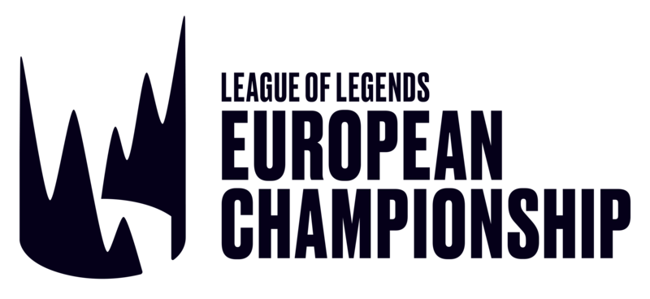

LEC는 League of Legends European Championship의 약자이다. 구 LCS EU부터 이어진 유럽만의 특징은 단일국가내 리그가 아닌 유럽연합에서 개최되는 리그라는 점이다. 이 때문에 팀마다 국적이 다른 선수가 함께있다는 점이 유럽리그만의 특색이다. LEC로 개편되기 전에는 5대 리그 중 자본력이 가장 떨어지는 리그 중 하나였다. 특히 같은 서구권 리그인 북미에 비해 자본력이 매우 떨어져 북미에 선수를 빼앗긴 적이 많다. 비슷한 맥락으로 LCS EU와 LCS NA는 중국, 한국과는 차원이 다른 라이벌 관계를 구축하고 있다. 하지만 프랜차이즈 제도 도입으로 LEC로 개편후에는 상당한 거대자본이 유입되는중이다
유럽 리그의 장점은 유럽만의 독특한 운영 스타일과 넓은 인재풀, 특이한 전략을 많이 준비한다는 점이다. 애초에 현재 리그 오브 레전드의 공식으로 잡혀있는 EU스타일부터가 유럽에서 시작되었다. 그 외에도 세계 최초로 하이머딩거를 공식전에서 사용하는 등 특이한 조합과 전략이 많이 나온다. 또한 유럽리그는 18시즌 전까지 전세계 리그의 트렌드를 주도한 한국식 운영(라인스왑, 오브젝트 컨트롤)을 가장 잘 모방한 리그중 하나라는 점이다. 이 때문에 그렇게 선수가 유출당하고도 운0의 북미보다 세계무대에서 더 나은 성적을 내왔다.